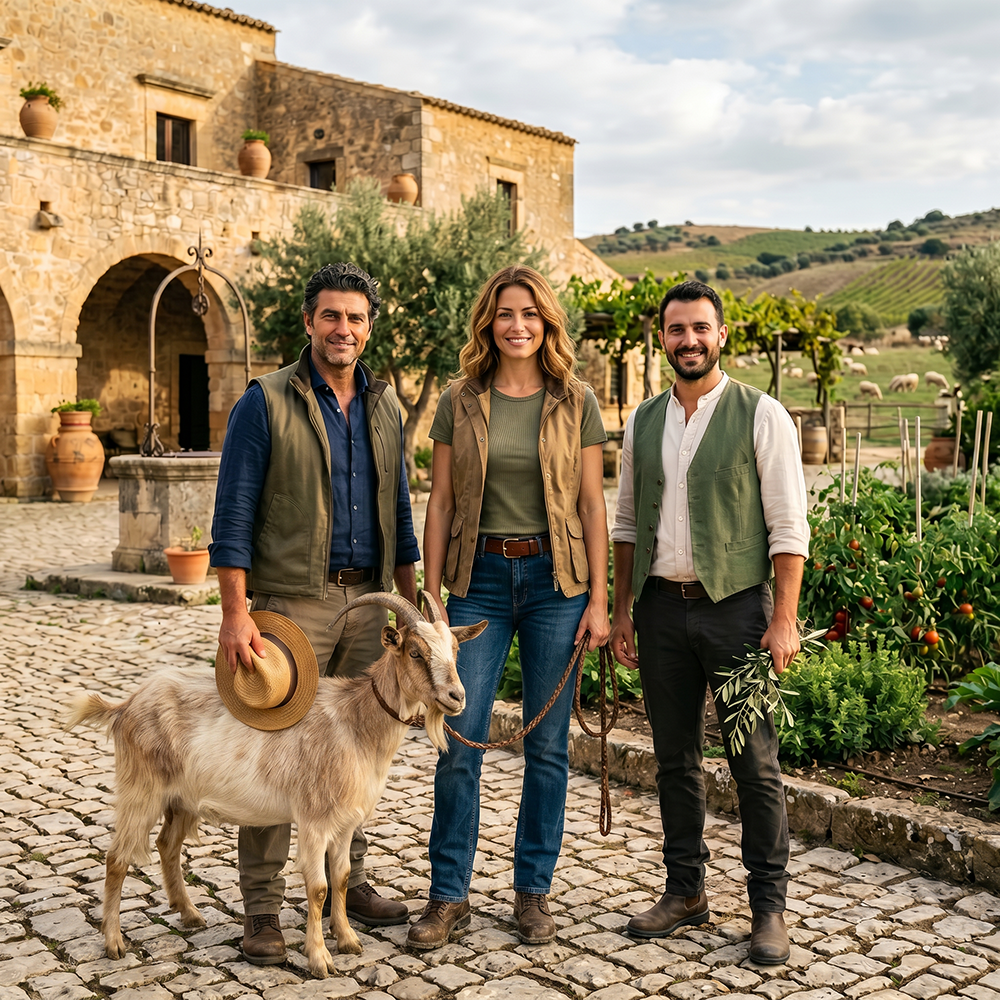
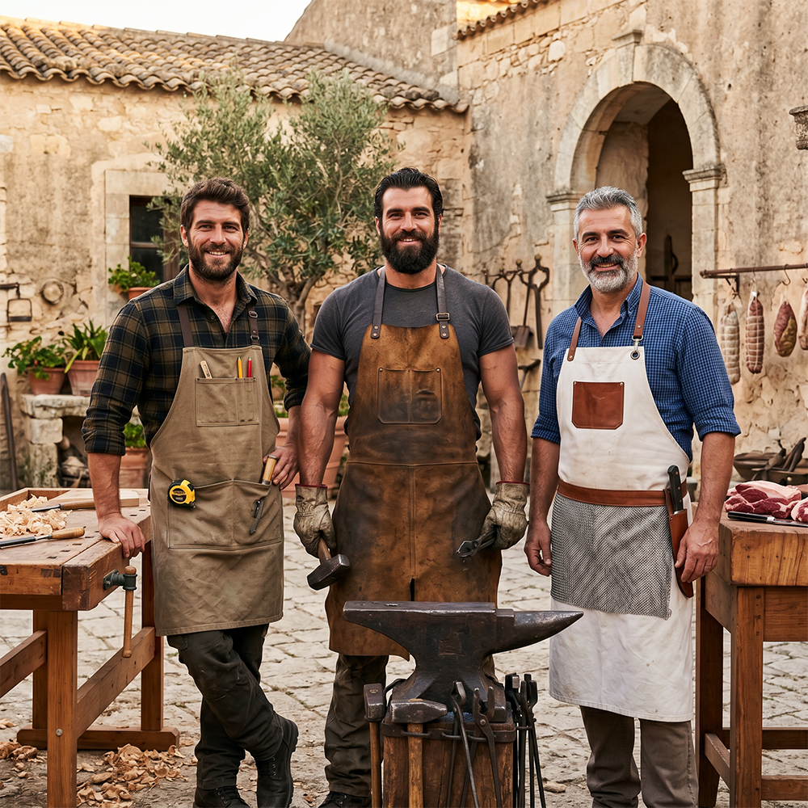
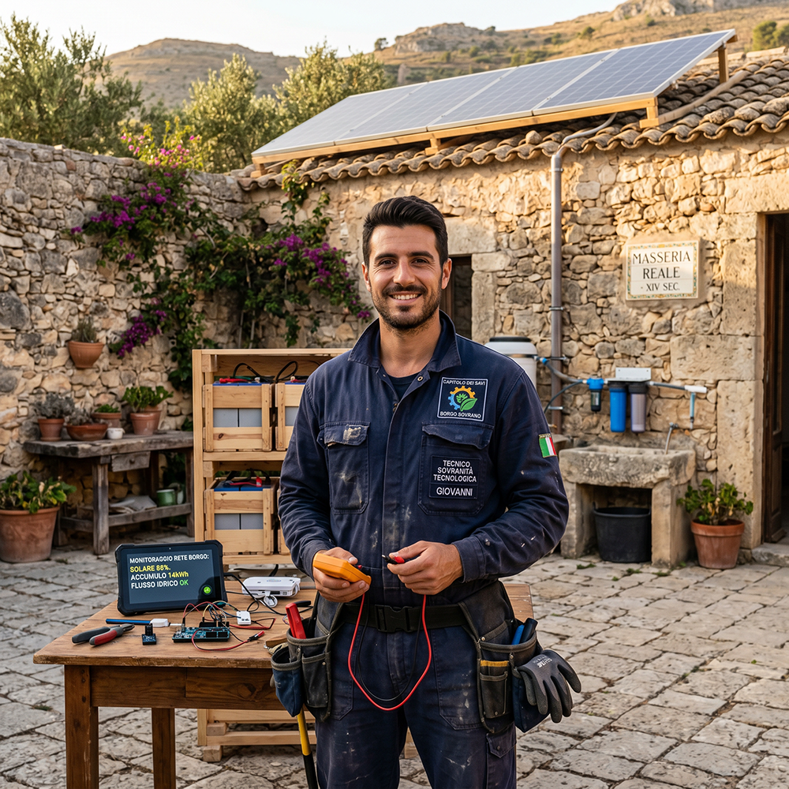
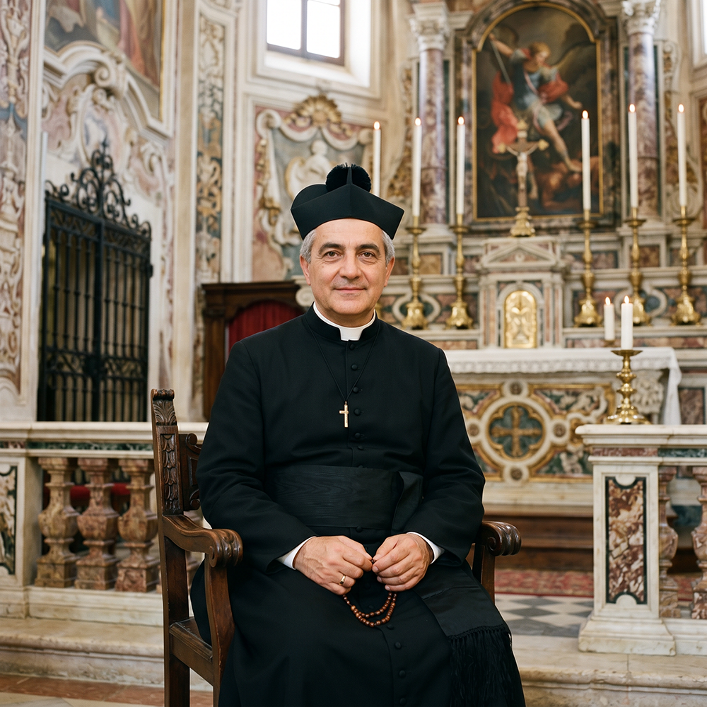
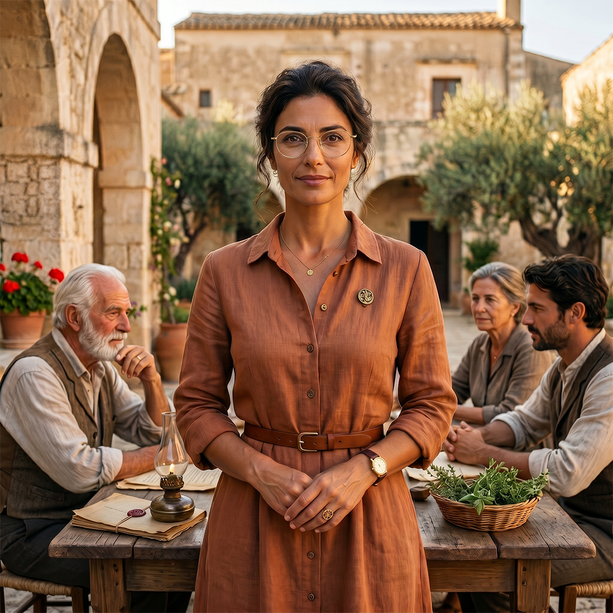
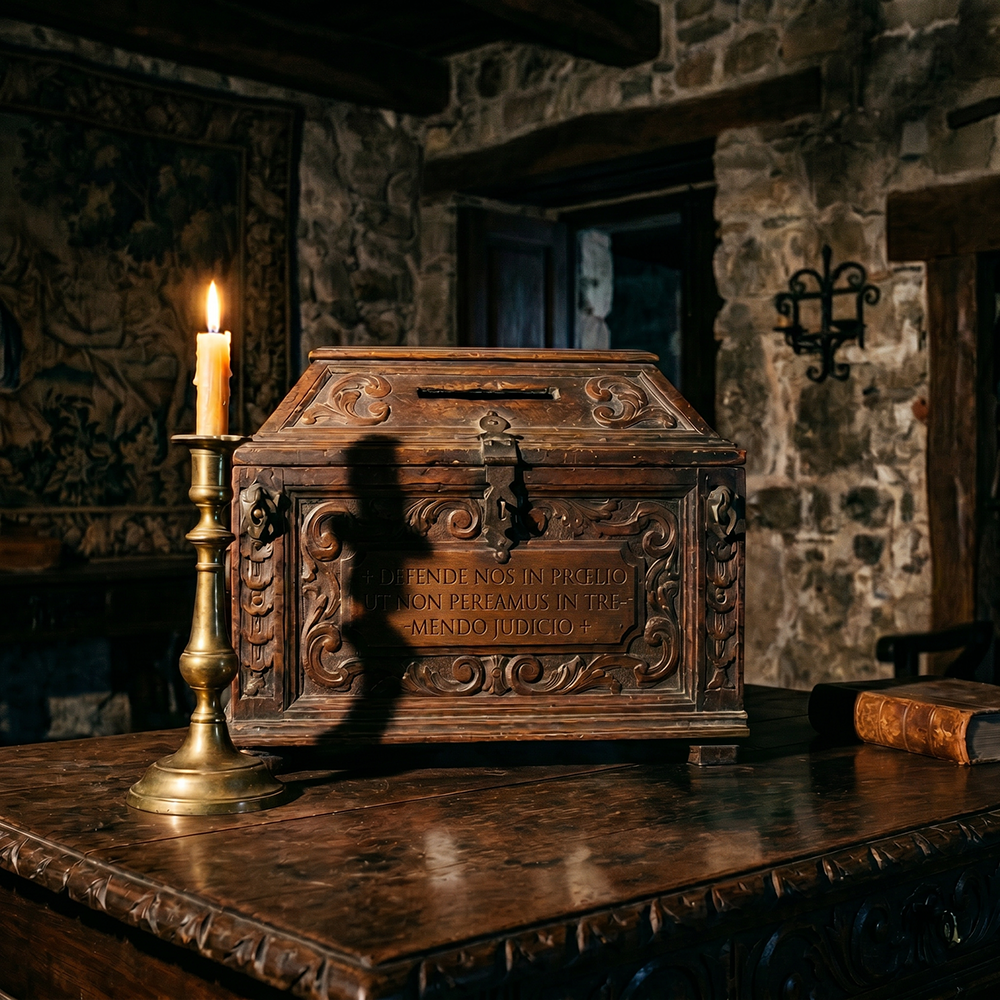

The Governance Model of the Borgo Ideale
The Borgo Ideale, of which Baglio San Michele represents the pilot project, adopts a system of government conceived as an instrument of good governance rooted in Catholic Tradition, the Benedictine Rule (ora et labora), and the historical forms of self-government of Italian rural communities.
This model is not an ideological abstraction, but a concrete and replicable response to social disintegration, urban precariousness, and globalist social engineering.
The historical and ideological foundations
The system is directly inspired by the Constitutions of the medieval Italian Communes (12th–14th centuries) and the self-government regulations of rural and mountain communities. In these historical models, government was based on general assemblies of heads of families integrated by a restricted council of “savi” or “massari” elected with mandatory rotation, incompatibilities, public reporting, and solemn oath on the Gospel.
These historical guarantees have been adapted to the context of the Borgo Ideale to ensure impartiality, transparency, and resistance to external interference.
The Chapter of the Savi: composition and roles
The central collegial body is the Chapter of the Savi, composed of 9 members. The composition reflects the operational priorities of the Borgo and ensures that every decision takes into account the short supply chain and self-sufficiency.
3 Agricultural / Livestock Savi
Chosen from biodynamic farmers, livestock breeders and vegetable gardeners. They deal with the management of olive groves, vineyards and vegetable gardens according to traditional and biodynamic methods, animal care and soil regeneration.

3 Artisan / Manufacturing Savi
Chosen from carpenters, masons, blacksmiths, bakers, pork butchers, ceramists and similar figures. They deal with food processing and manufacturing production in Iblean stone, wood and iron.

1 Technical-Energy Savio
Responsible for technological sovereignty (Open Source Ecology and appropriate technologies). Manages renewable energy systems, storage, water management and low-tech/open-source solutions.

1 Spiritual Savio (ex officio)
The priest with stable resident pastoral care. He has no right to vote but possesses veto power over any decision contrary to the Catholic, Apostolic and Roman faith.

1 Community Savio
Elected from among the resident families. Represents social cohesion, the generational transmission of values and the care of human relationships within Sicilian Slow Living.

The electoral system

The electoral mechanism is expressly designed to prevent vote manipulation, personal factions, clientelism and speculative or external influences. The system alternates voting and sortition in a structured way.
1. The general assembly of heads of families proposes or votes on a shortlist of suitable candidates.
2. Among the names on the shortlist, a draw is held for the final choice.
3. The result of the draw is submitted for formal ratification by the general assembly.
To these rules are added the mandatory rotation of offices, strict incompatibilities, periodic public reporting and solemn oath on the Gospel.
The role of the Heads of Families
The Heads of Families constitute the foundation of popular sovereignty. Every stable resident family unit that has completed the admission process designates its own head of family with full rights of participation.
The temporary role of the Regent
In the initial phases of Phase 1 (2026–early 2027), when the number of settled families is still limited, a transitional provision applies. A temporary Regent is appointed (maximum 24–36 months) who exercises the powers of the Chapter on a provisional basis, with the obligation to consult the priest and provide periodic reports to the assembly. The position is not renewable.
The Internal Regulations and the Constitutions of the Borgo Ideale are, at present, working drafts. In order for them to come into force and produce binding effects, they must be formally approved by the Founders of the Borgo itself. This system ensures that governance grows together with the community, without ever losing control over identitarian coherence and fidelity to the founding principles of the Borgo Ideale.